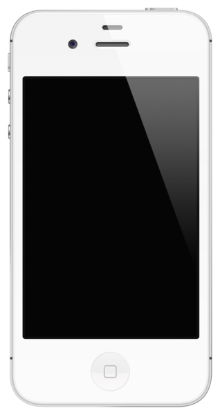

| главная |
iPhone 2g |
iphone 3g/3gs |
iPhone 5 |
iPhone 5C/5S |
iPhone 6/6+ |
iPhone 6S/6S+ |
iPhone SE |
iPhone 7/7+ |
iPhone 8 |
iPhone X |
iPhone XS |
iPhone 4
iPhone 4 — сенсорный смартфон, разработанный корпорацией Apple. Это четвёртое поколение iPhone и преемник iPhone 3GS. Позиционируется для осуществления видеовызовов (под названием FaceTime), использования медиа, в том числе книг и периодических изданий, фильмов, музыки и игр, и для общего доступа к вебу и электронной почте. Был представлен 7 июня 2010 года на Worldwide Developers Conference в Сан-Франциско и был выпущен 24 июня 2010 года в США, Великобритании, Франции, Германии и Японии. iPhone 4 работает на операционной системе iOS — на той же операционной системе, которая используется в предыдущих iPhone, iPad и iPod touch. Она главным образом управляется пальцами пользователя на мультитач-дисплее, который чувствителен к контакту пальцев. Наиболее заметное различие между iPhone 4 и его предшественниками — это новый дизайн, который включает в себя неизолированную раму из нержавеющей стали, действующую как антенна устройства. Внутренние компоненты устройства расположены между двумя панелями химически укреплённого алюмосиликатного стекла. iPhone 4 имеет процессор Apple A4 и 512 МБ eDRAM, что вдвое больше, чем в его предшественнике, и в четыре раза больше, чем в первом iPhone. Его 3,5-дюймовый (89 мм) ЖК-дисплей со светодиодной подсветкой и с разрешением 960?640 пикселей позиционируется как «Retina Display». Его работу обеспечивает обновлённая графическая подсистема: iPhone 4 работает на базе графического процессора PowerVR SGX535. Последняя доступная версия операционной системы — iOS 7.1.1
iPhone 4s
iPhone 4S (с 2013 года также стал использоваться вариант написания iPhone 4s) — сенсорный смартфон корпорации Apple, пятое поколение смартфонов iPhone. Внешне телефон похож на iPhone 4, но в новой модели улучшена аппаратная часть и обновлено программное обеспечение. Среди основных нововведений: голосовой помощник Siri, новый двухъядерный процессор А5, возможность функционирования в качестве Wi-Fi-роутера, независимость от персонального компьютера и улучшенная камера. Большинством функций можно управлять с помощью голоса. После представления телефона на конференции «Let’s Talk iPhone» (проводимой 4 октября 2011 года в Купертино, Калифорния), Apple, с 7 октября 2011 года, начала принимать предзаказы на iPhone 4S в семи странах (США, Канада, Австралия, Великобритания, Франция, Германия и Япония). Первые телефоны были получены покупателями 14 октября 2011 года. Продажи в России начались 16 декабря 2011 года. Позже iPhone 4S будет доступен в 70 странах по всему миру. Для американских клиентов продажи смартфона без контракта начнутся приблизительно в ноябре 2011 года, а для остального мира Apple начнёт продавать сразу бесконтрактные iPhone 4S. АП огласило, что AT&T Mobility описала функции нового iPhone 4S как «экстраординарные».
Множество видео и различных сообщений об изменениях в iPhone следующего поколения и его имени (считалось, что Apple выпустит iPhone 5) блуждали по интернету долгое время до дня анонса. После того, как стало известно, что Apple не выпустит iPhone 5, а вместо этого представило iPhone 4S, многие разочаровались. Тщательные исследования устройства показывают, что его новшества являются технологически существенными. На следующий день после выпуска один из основателей Apple, Стив Джобс, скончался.